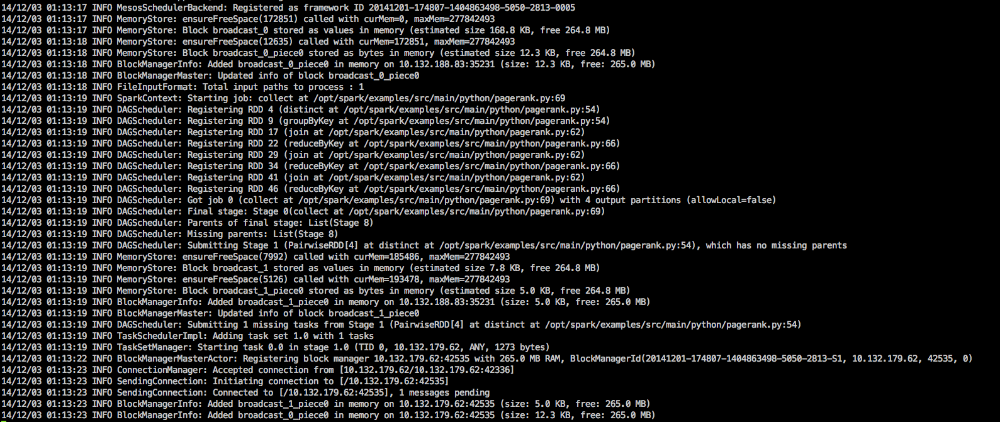

Distributed Computing with Apache Mesos
Abhay Agarwal
abhay@mesosphere.io
Michael Jin
michael@mesosphere.io
Tamar Ben-Shachar
tamar@mesosphere.io
Sunil Shah
sunil@mesosphere.io
Why are distributed systems hard?

Why are distributed systems hard?
Things fail, all the time!
Why are distributed systems hard?
They're BIG.
Why are distributed systems hard?
There's a lot of moving pieces.

Mesoswhat?
PageRank on Mesos
Build Me a Framework
Mesos is a
- Cluster Resource Manager
- Task Scheduler


| Request model | 2-level model |

|

|
Mesos is...
A top-level Apache project |
|
A cluster resource negotiator |
|
Scalable to 10,000s of nodes |
|
Fault-tolerant, battle-tested |
|
An SDK for distributed apps |
Why use Mesos for my next distributed system?
| Task distribution, launching, monitoring, failure detection, killing, and cleanup |
|
| Resource isolation with containers | |
| Messaging between tasks | |
| Distributed state |


What is Mesos good for?
Fault tolerance
Fault Tolerance
Task Failure :(


Fault Tolerance
Local Agent Failure :(


Fault Tolerance
Host or Network Failure :(


Fault Tolerance
Mesos Master Failure :(


Fault Tolerance
Scheduler Failure :(


What is Mesos good for?
Long running services & batch jobs / analytics workloads
What is Mesos good for?
Elasticity
What is Mesos good for?
Drastically increasing utilisation


Mesoswhat?
PageRank on Mesos
Build Me a Framework
Provision a cluster at google.mesosphere.com
Connect to the master node
ssh jclouds@$master_ip Download and inspect our convenience script
wget http://downloads.mesosphere.io/tutorials/spark_demo.shnano spark_demo.shRun it, saving results to a file
./spark_demo.sh > results.txtAs the job runs, Spark will print out details about what it’s doing
While the job is running, the Spark Web UI can be seen at http://$master_ip:4040 (note you must connect to the VPN)
While the job is running, the Spark Web UI can be seen at http://$master_ip:4040 (note you must connect to the VPN)
When the job is complete, the PageRank results can be viewed
nano results.txt
Mesoswhat?
PageRank on Mesos
Build Me a Framework
Resources
|
RENDLER example framework: github.com/mesosphere/RENDLER |
|
|
ANAGRAMMER example framework: github.com/mesosphere/ANAGRAMMER |
|
|
Building production frameworks for Mesos: mesosphere.github.io/presentations/production-frameworks/#/ |
Thanks!
Come and talk to us
P.S., we're hiring!
|
This presentation: mesosphere.github.com/presentations/hackers-at-berkeley-2015 |
|
|
Mesos paper: cs.berkeley.edu/~alig/papers/mesos.pdf |
|
|
Try out Mesosphere on GCE: google.mesosphere.com |
|
|
Come work with us: mesosphere.io/jobs |